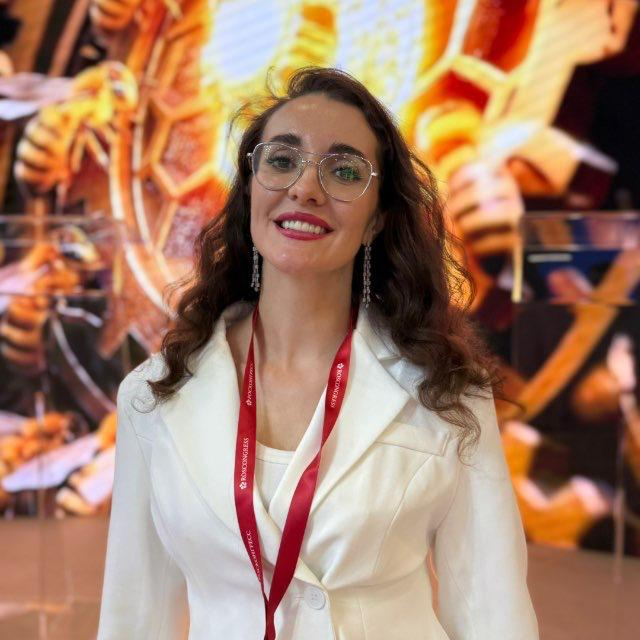
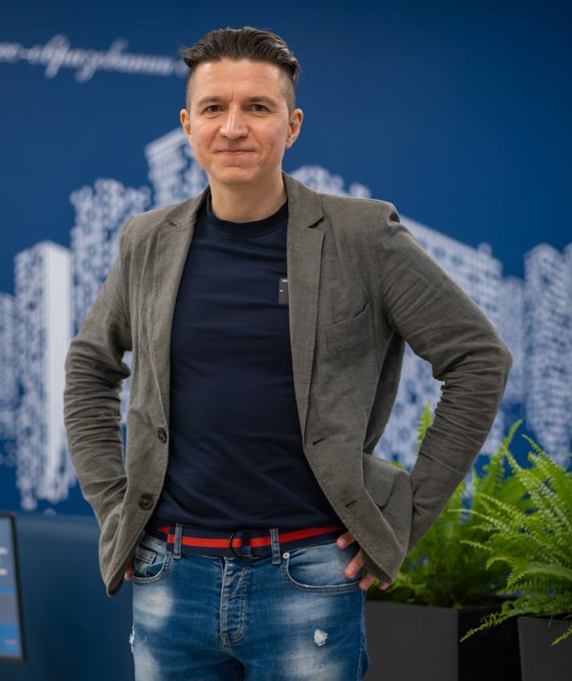

СК
Сергей Курьян
Автор программы и ведущий
Основатель АО «Нейросети». 25 лет предпринимательского опыта. Преподаватель кафедры цифровых технологий МПГУ.
Нажмите, чтобы увидеть фотоФото скоро появитсяСергей Курьян
CAIO (Chief AI Officer) - это новая ультра современная профессия. Программа для тех, кто хочет, чтобы ИИ приносил деньги в компанию, а не презентации.
Результат: Защита перед комиссией вашего проекта и пакета из 19 документов, как если бы вы защищали проект перед своим руководством.
Каждая компания сегодня «что-то делает с ИИ». Сотрудники пробуют чат-боты, подрядчики показывают демо, руководство ждёт результата. А дальше начинается знакомое: пилоты, которые не превращаются в систему; красивые цифры эффекта, которые никто не может проверить; бюджет, который финансовый директор не готов подписать; риски с данными, о которых вспоминают после инцидента.
Проблема не в технологиях. Проблема в том, что внедрением ИИ некому управлять как бизнес-проектом. Спрос на реальных специалистов превышает предложение. Именно эту роль - директора по внедрению ИИ - и выстраивает программа.
Актуальные вакансии с HeadHunter для ТОП-менеджмента в IT с зарплатой 150 000 - 500 000 руб. Окупаемость курса - 1 месяц.
Нажмите на карточку, чтобы открыть вакансию на hh.ru.
«Директор по внедрению ИИ» - практическая программа, которая проводит вас по всему циклу: от мандата и аудита процессов до архитектуры решения, экономики, рисков, инфраструктуры и работы с командой.
Вы учитесь не на абстрактных примерах, а на своей компании. Если раскрывать внутренние данные нельзя, работаете на готовом учебном кейсе. Каждая тема заканчивается не тестом «на запоминание», а рабочим документом, который потом ложится на стол руководству.
6 модулей · 33 темы · 92 видео · 19 документов · защита перед комиссией
То, с чем можно идти к генеральному и финансовому директору:
Всё это вы защищаете перед комиссией.
Бесплатный урок: как выглядит обучение внутри.
Образец одного документа из пакета (обезличенный).
Для вас, если вы:
Для вашей компании: вы получаете сотрудника, который приносит не отчёт об обучении, а готовый пакет внедрения: мандат, портфель инициатив, ТЗ, расчёт окупаемости, реестр рисков и план пилота для вашего процесса. Оплата от юридических лиц - по счёту и договору.
Программирование знать не нужно. Нужна готовность работать руками на реальном процессе.
Итог: сведение 19 документов, инвестиционная записка, презентация и защита (15 минут доклад, 20 минут вопросы).
Нагрузка названа честно, диапазоном: вся программа - около 87-141 часа активной работы, это примерно 7-11 часов в неделю при трёх месяцах обучения. Это предварительная оценка, не обещание. Первый результат - уже в первой теме.
Каждая работа проверяется по пяти критериям: конкретный процесс и его владелец; обоснованность ответов; согласованность вывода; дальнейшие действия с ответственными и сроками; проверяемость (дата, версия, источники). Высокую оценку можно получить и за честную «доработку»: цель - верно оценить процесс, а не нарисовать зелёный результат.
Следующий модуль открывается после принятия пакета предыдущего и прохождения базового теста. Итоговый диплом оценивает комиссия.
После успешного прохождения курса и сдачи экзамена на 8 баллов из 10 мы гарантируем написание рекомендательного письма на имя любого работодателя. Экзамен нужно сдать лично в Москве или в Минске.
Внедрение ИИ в организациях
Генеральный директор АО «Нейросети». Рассматривает применение искусственного интеллекта в корпоративной среде, включая образовательные и прикладные сценарии использования AI-инструментов.
Нажмите, чтобы увидеть фото
Фото скоро появитсяМарина ПетрушкевичБизнес-стратегия и управленческое внедрение
Автор книги «Гиперреалистичная стратегия», генеральный директор ООО «Гиперреалистичная стратегия», основатель Ассоциации директоров по развитию и Корпорации искусственного интеллекта. В курсе связывает ИИ-инициативы с целями компании, управленческими приоритетами и действиями команды.
Нажмите, чтобы увидеть фото
Фото скоро появитсяАлексей ПанВажно: к старту 05.11.2026 открыт модуль 1 из 6, остальные модули открываются по мере готовности. График открытия сообщим участникам.
Без куратора
Полная программа на платформе: 6 модулей, 92 видео, рабочие тетради и шаблоны, защита диплома. Без куратора: сопровождение только через поддержку 5/7.
С куратором
Онлайн-программа плюс 2-3 очных дня в Москве в конце: разбор проекта и защита.
С куратором
Всё из онлайн-программы плюс личный разбор вашего проекта с Сергеем Курьяном, регулярные очные занятия в малой группе, очная защита и нетворкинг с выпускниками. Ограниченное число мест.
Рассрочка: оформляется через банк или сервис рассрочки по отдельному договору, полную стоимость и условия вы увидите до оформления. Для юридических лиц: оплата по счёту и договору. Во всех форматах на выходе - ваш пакет внедрения из 19 документов и защита перед комиссией.
Оплатите программу в рассрочку или оформите кредит. Организация-партнёр: ООО «Цифровые технологии» (ИНН 5906126139, ОГРН 1155958023495), сервис aktivcredit.ru. Срок, ставку и полную стоимость вы увидите у партнёра до оформления.
Купить в рассрочку Купить в кредитПервый поток стартует 05.11.2026, ориентир по длительности - около трёх месяцев. Материалы открываются по модулям; график открытия следующих модулей сообщим участникам.
Пять вопросов о данных одного процесса помогут понять: начинать проект сейчас или сначала навести порядок. Выберите один ограниченный процесс (например, «первичная обработка входящих обращений», а не «вся цифровизация») и ответьте «да» или «нет». Если сведений нет, так и считайте: «неизвестно» - не «да».
1. Есть ли в учётной системе структурированные данные по этому процессу (даты, категории, статусы)?
2. Есть ли тексты и документы, нужные для контекста (письма, обращения, регламенты)?
3. Данные собраны в одном месте (а не разбросаны по несвязанным системам)?
4. Есть ли хотя бы минимальная разметка или сопроводительные сведения (чем закончилась обработка)?
5. Можно ли получить выгрузку за один рабочий день?
Правило: «данные есть» не значит «данные подходят для задачи». У каждого ответа «да» должно быть основание. Это учебная модель оценки, а не гарантия успеха проекта. Ответы нигде не сохраняются.
Хочу пройти всю программуРекомендуйте этот курс друзьям и коллегам, которым он будет полезен, и получайте за это бонус. Условия бонуса пришлём по запросу.
Стать амбассадоромСвяжемся с вами по контакту, который вы указали в форме.
Расскажем про формат, условия и то, что подойдёт именно вам.
Для юридических лиц - счёт и договор. Для частных лиц согласуем порядок оплаты.
К старту 05.11.2026 вы получите доступ к модулю 1. Остальные откроются по мере готовности.
Если остались вопросы до заявки, напишите на info@aiskolkovo.ru.
Запуск курса «ИИ-Директор» пройдёт как онлайн-конференция: 5 ноября 2026 года в 19:00 по Москве. Она продлится около полутора-двух часов.
Оставьте заявку, и мы свяжемся с вами. Выберите формат, и мы ответим на вопросы по условиям.
Курс стартует 05.11.2026. Email для связи: info@aiskolkovo.ru.